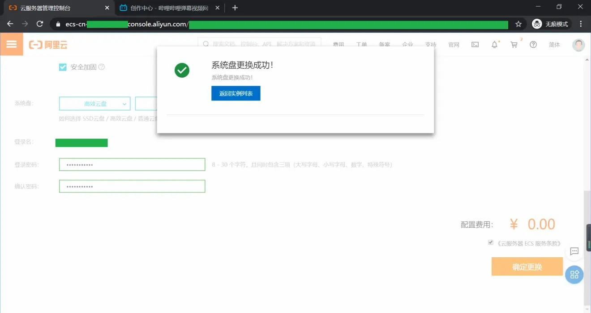
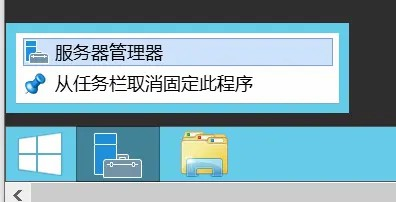
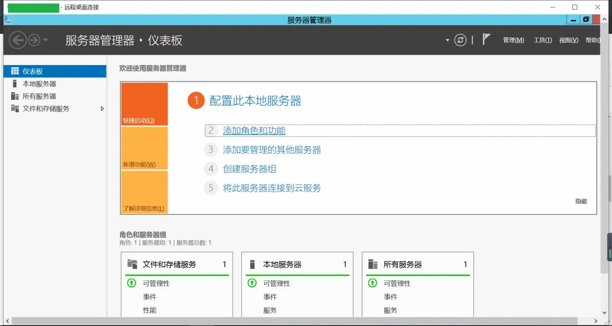
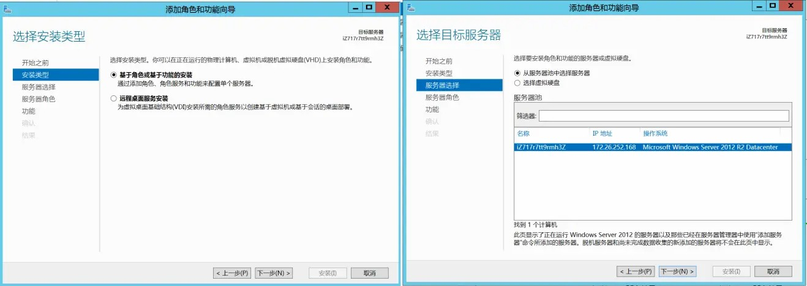
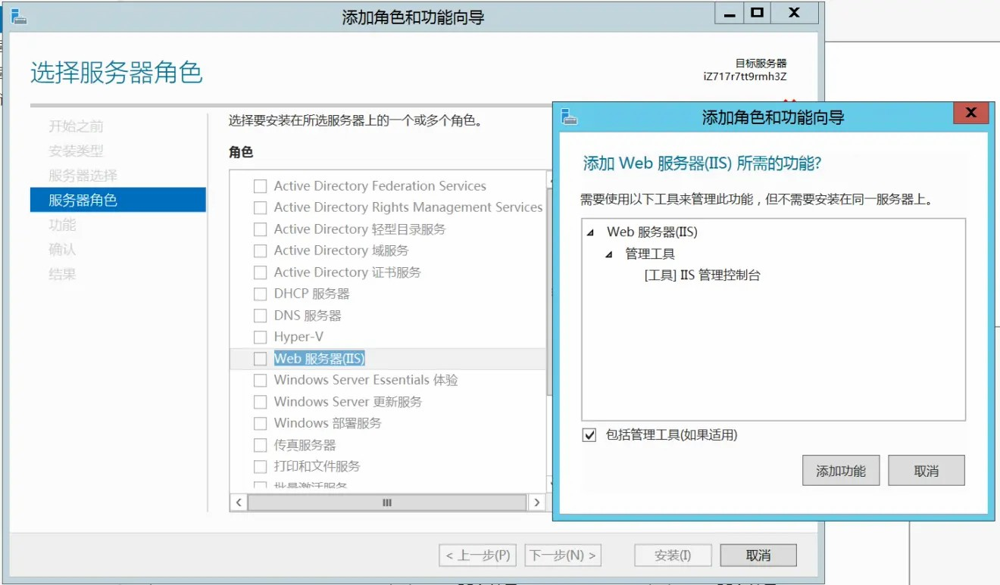
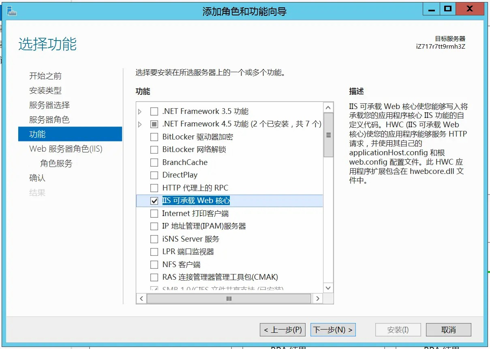
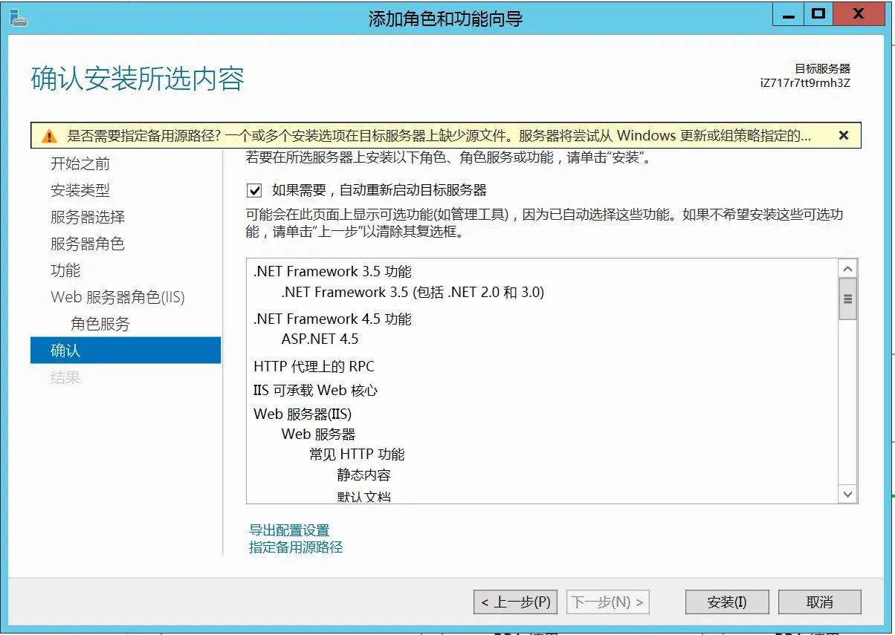

上次，写了Win10开服务器之后，好像有人真的买了一个服务器来开。
考虑到服务器提供商一般不会提供Windows10安装，所以做了一期Server 2012 R2的。
我为了做这期专栏还重置了一边服务器(懒得下镜像)...
请注意：Win Server GUI服务器一般1GB内存妥妥的，512MB可能吃紧，也可能会爆掉。

啊啊啊，给个三连吧
首先，我们得登陆服务器，RDP或者VNC。
现在是正文：

1.打开服务器管理器，这个一般都固定在任务栏

2.单击"添加角色或功能"

一直下一步

3.勾选"Web服务器(IIS)"，然后会弹出确认对话框，点击确认
记得勾选"包括管理工具"

4.选择"IIS可承载的Web核心"，然后下一步*2
5.根据需求选择需要的功能，然后下一步

6.确认无误后，点击安装
其实之后的配置就是和Win10的配置差不多了，把东西塞到C:\inetpub\wwwroot下就可以了。
链接：
>点击前往
访问服务器IP就可以看到你的页面了。
请注意：
有些服务器提供商为了安全，某些端口(一般22，3389，80默认开放)需要自己开放，这里就不做一一解释了
这篇文章会同步在我的BiliBili发布